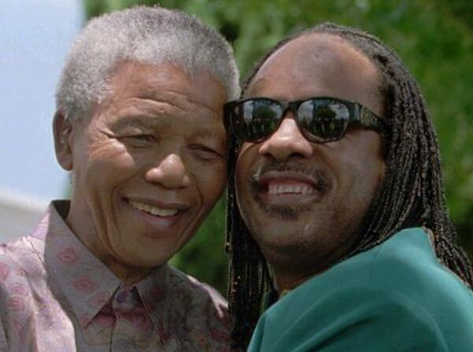
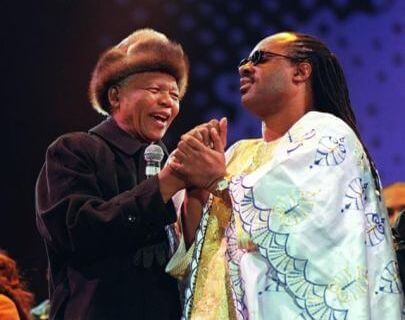
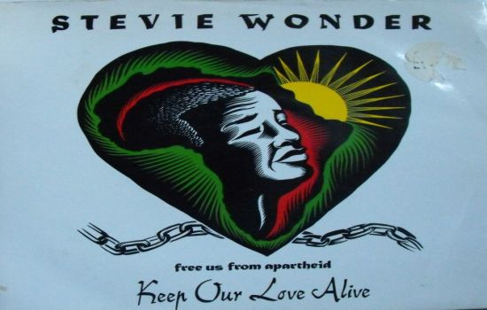

Nelson Mandela;
símbolo de libertad

Stevie Wonder, Mensajero de la Paz de la Naciones Unidas, y hombre impulsor de la igualdad y los derechos de los seres humanos, siempre ha manifestado su admiración y cariño frente al gran hombre que ha dedicado buena de su vida a los demás, Nelson Mandela. Su corazón dejó de bombear sangre, pero su existencia se mantendrá ligada para siempre como símbolo de libertad.
Él fue el prisionero número 466/64, permaneciendo encerrado durante 27 años por su lucha pacífica en contra de la desigualdad racial. Sobre él numerosos reconocimientos en todo el mundo por su sufrimiento y lucha por eliminar el Apartheid, entre ellos el de Premio Nobel de la Paz, y ser el primer presidente de Sudáfrica elegido democráticamente. La Asamblea General de las Naciones Unidas estableció en el año 2009 marcar en el calendario los dias 18 de julio -su dia de nacimiento- como el Día Internacional de Nelson Mandela.

Un reconocimiento a tantos años que dedicó su vida ayudando a los demás, abogado defensor de los derechos humanos y siempre trabajando por la paz. En aquel primer evento de celebración, artistas como Aretha Franklin, Alicia Keys, Queen Latifah, y como no, Stevie Wonder estuvieron presentes haciendo honor a un hombre único. Los últimos meses han sido críticos frente a su delicado estado de salud, e inevitablemente el desenlace ha sido su fin entre nosotros.
Su castigado corazón ha dejado de latir. Han sido muchos los años que ha vivido rodeado de muchas injusticias y sufrimiento, pero el cariño y reconocimiento de la gente de bien siempre prevalecerá y mantendrá vivo el amor que dedicó a los demás.

"Keep Our Love Alive" -mantengamos vivo nuestro amor- es la canción que Stevie Wonder publicó en 1990 para sensibilizar a la opinión pública en contra de lo inhumano que representaba el Apartheid en Sudáfrica, y que Stevie interpretó en ese homenaje a un hombre que luchó por unos ideales que condujeran a la igualdad y libertad de todos los seres humanos.
Al igual que cuando desaparece uno de esos grandes seres vivos que ha dado buena parte de su vida dedicándola desinteresadamente a los demás, sólo queda darle las gracias sabiendo que su espíritu siempre permanecerá con nosotros manteniendo vivo ese amor.

Letra Keep Our Love Alive
Feeble is the mind that says they don't care
Selfish is the heart that won't give their share
Poor them, Poor we
Débil es la mente que dice que no les importa
Egoísta es el corazón que no comparte
Pobres de ellos, pobres nosotros
Wasted is the mind that won't take a stand
Lieth the tongue that says they can't when they can
Poor him, Poor she
Desperdiciada es la mente que no toma posición
miente la lengua que dice que no pueden cuando pueden
Pobre de él, pobre de ella
For as long as we live,
And are blessed with air on earth to breathe
We all should live to keep our love alive
Mientras vivamos
Y seamos bendecidos con aire en la tierra para respirar
Todos deberíamos vivir para mantener vivo nuestro amor
More than blinds the soul that sees but won't show
Lost the leader with the way but won't go
For you, For me
Más que ciega el alma que ve pero no se mostrará
Perdió el líder por el camino, pero no irá
Por ti, Por mí
Worthless is the one with will but won't try
Grounded are we all if we don't think high
Of you, You of me
Cobarde es el que tiene voluntad, pero no lo intenta
Aterrados estamos todos si no pensamos bien
de ti, tú de mí
For as long as we live,
And are blessed with air on earth to breathe
We all should live to keep our love alive
Mientras vivamos
Y seamos bendecidos con aire en la tierra para respirar
Todos deberíamos vivir para mantener vivo nuestro amor
Let's keep our love alive
Mantengamos vivo nuestro amor
For as long as I live,
And am blessed with air on earth to breathe
I know I'll live to keep our love alive.
Mientras viva
Y sea bendecido con aire en la tierra para respirar
Sé que viviré para mantener vivo nuestro amor.
Inicio |
Biografía |
Discografía |
Videos |
Letras |
Grammys |
Top ten
steviewonder.es ® is a registered trademark. All content © 2008-2022 by izugarria.
Todos los contenidos del portal incluyendo, imágenes, vídeo, nombres, marcas y logos, son propiedad de sus respectivos dueños.